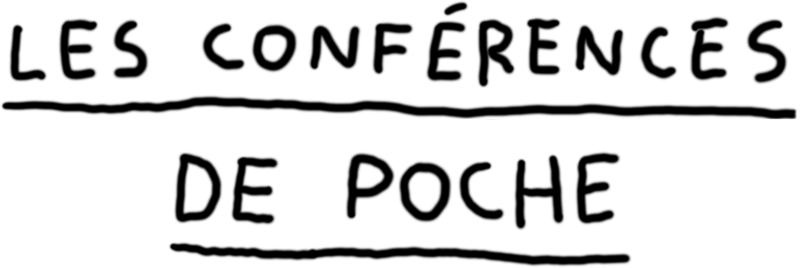
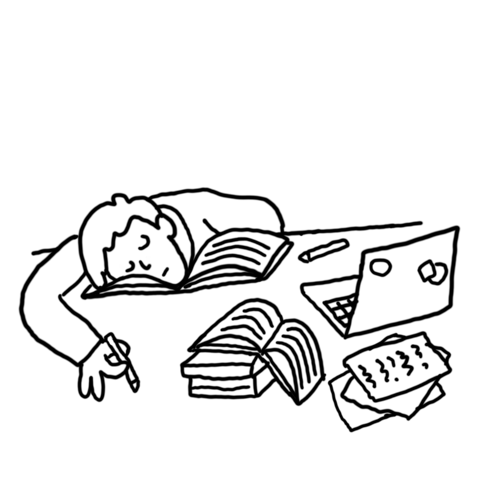

La cie Nokill présente
Un spectacle de Léon Lenclos
Depuis le milieu des années 10, je donne des courtes conférences où je confonds fiction et réalité de sorte que la différence entre les deux n’intéresse plus personne. Une fois, à propos d’une histoire que je racontais quelqu’un m’a demandé si c’était vrai, je n’ai pas pu répondre car je ne savais plus. Une fois, un collégien qui avait vu le spectacle lors d’une sortie scolaire a écrit à propos de ces conférences « long et très sérieux ». Une fois, j’ai été obligé d’avouer à une doctorante qu’en réalité, je n’avais pas lu Spinoza. Une fois, j’ai dû arrêter la conférence, car un téléphone sonnait et que personne ne le coupait, c’était le mien. Parfois, je ne dis rien pendant plusieurs minutes et tout le monde m’écoute. Souvent je fais des dessins sur un paper-board pendant que je parle. J’ai aussi un verre d’eau que j’utilise pour boire.
Les conférences ont presque toutes été écrites sur commande : sur invitation d'un lieu, d'un collectif, à l'occasion d'une exposition, d'un festival. La structure décide du thème et accueille l'artiste pour une résidence d'écriture d'une semaine. Après être jouée une première fois en sortie de résidence, la nouvelle conférence intègre le répertoire des Conférences de poche.
La cie Nokill fait des spectacles depuis 2016 :
Diffusion
Amparo Gallur
07 68 52 29 53
cie@nokill.fr
Artiste
Léon Lenclos
06 27 65 68 33
contact@leonlenclos.net
leonlenclos.net ~ cienokill.fr